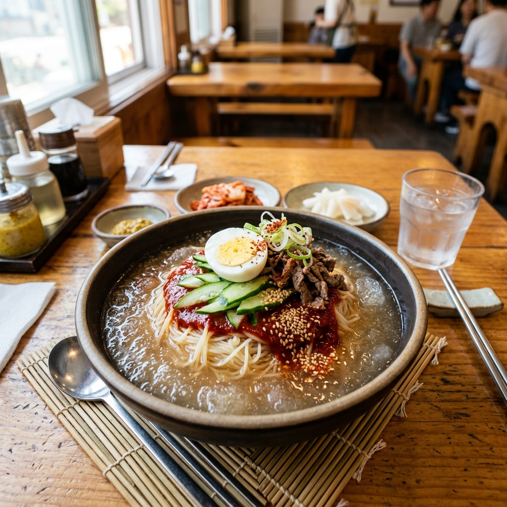
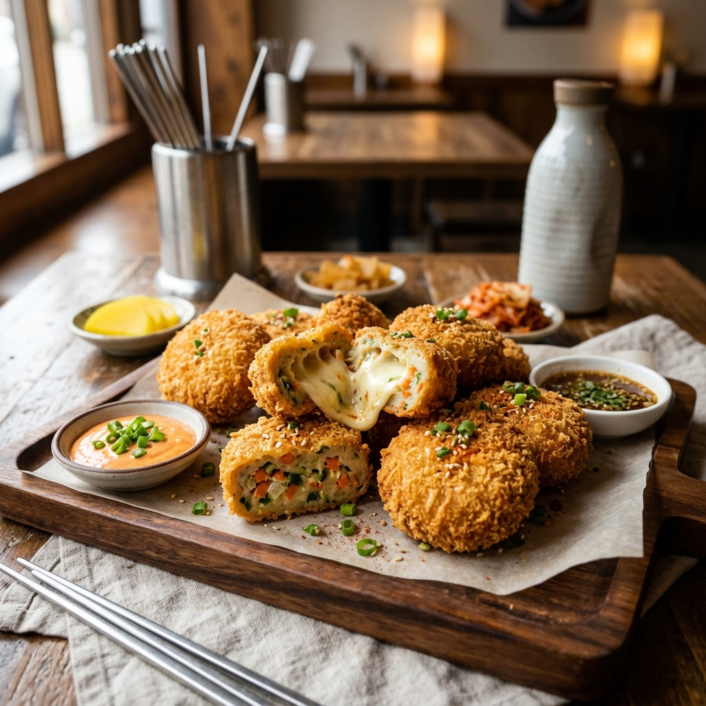
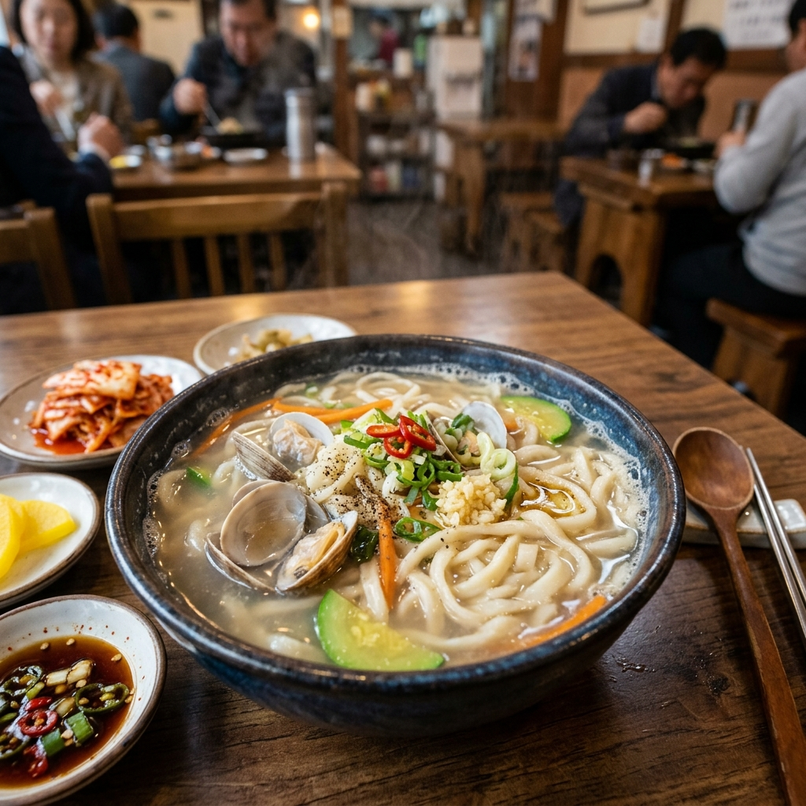

RANK 1

대표메뉴
물밀면, 비빔밀면, 왕만두
특징
부산역 앞을 지키는 줄 서는 밀면 맛집
RANK 2
대표메뉴
수육백반, 돼지국밥
특징
부드러운 수육과 진한 국물의 조화
RANK 3
대표메뉴
생갈비, 양념갈비, 감자사리
특징
해운대를 대표하는 고급 암소갈비 전문점
RANK 4
대표메뉴
양곱창 소금구이, 양념구이
특징
자갈치시장 내 옛날식 양곱창 구이 골목
RANK 5
대표메뉴
고기만두, 군만두, 콩국
특징
백종원의 3대 천왕에도 나온 부산역 앞 만두 맛집
RANK 6

대표메뉴
어묵 고로케, 수제 어묵
특징
1953년부터 이어진 부산에서 가장 오래된 어묵집
RANK 7
대표메뉴
치즈 크러스트 피자, 파스타
특징
풍부하고 신선한 임실치즈가 듬뿍 들어간 로컬 피자 맛집
RANK 8

대표메뉴
조개구이, 장어구이
특징
바다를 보며 즐기는 청사포 조개구이의 성지
RANK 9

대표메뉴
은복국, 밀복국
특징
뚝배기 복국의 원조이자 시원한 국물이 일품인 해장 맛집
RANK 10

대표메뉴
무채 떡볶이
특징
물을 넣지 않고 무에서 나오는 즙으로 만든 진한 떡볶이